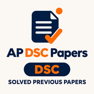
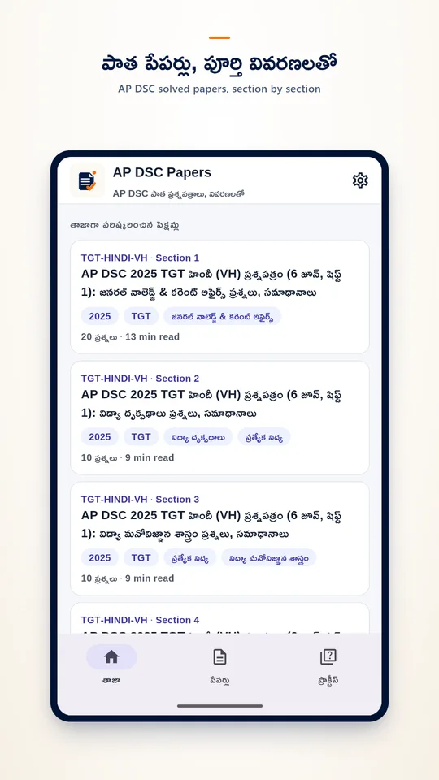
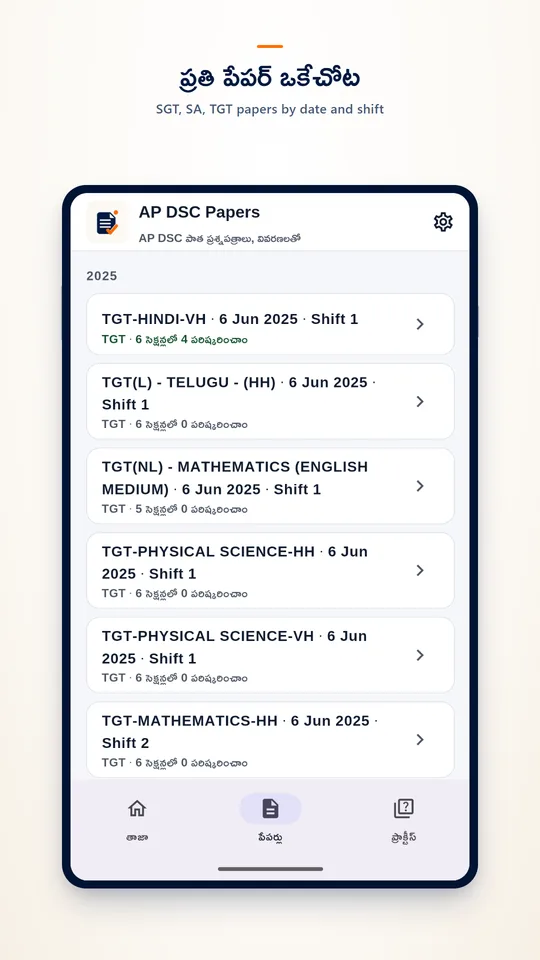
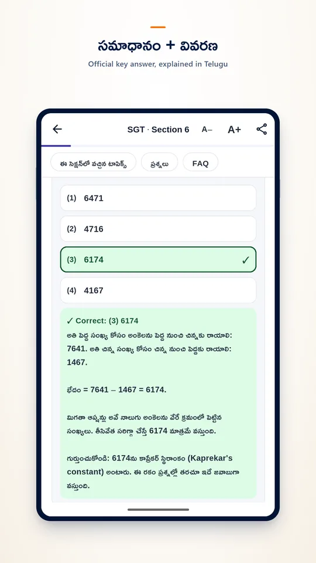
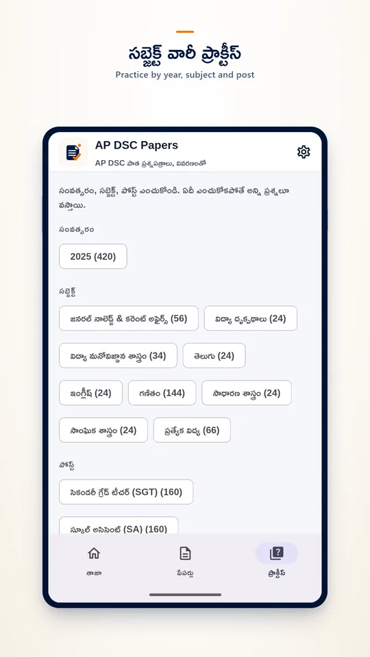
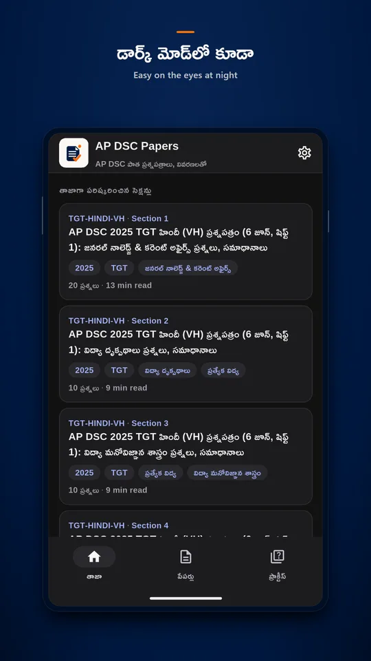

AP DSC Previous Papers Telugu
AP DSC Papers puts the real AP DSC 2025 question papers on your phone, solved one section at a time. Every question is shown as printed, in Telugu and English, with the official final-key answer and a clear explanation in Telugu. Free, no sign-in, and sections you opened work offline.
Get it on Google Play Visit the website




Features
- AP DSC 2025 papers for SGT, School Assistant and TGT posts, by exam date and shift.
- Each paper split into its sections: GK and current affairs, perspectives in education, educational psychology, languages, maths, science, social studies, special education.
- Tap an option to check it: the correct answer is from the department's final key, explained in Telugu, with every maths step shown.
- Practice questions by year, subject and post.
- Sections you open stay on your phone for offline study. Text size, light and dark themes.
- Optional notification when new solved papers are published. Ads never appear inside a question.